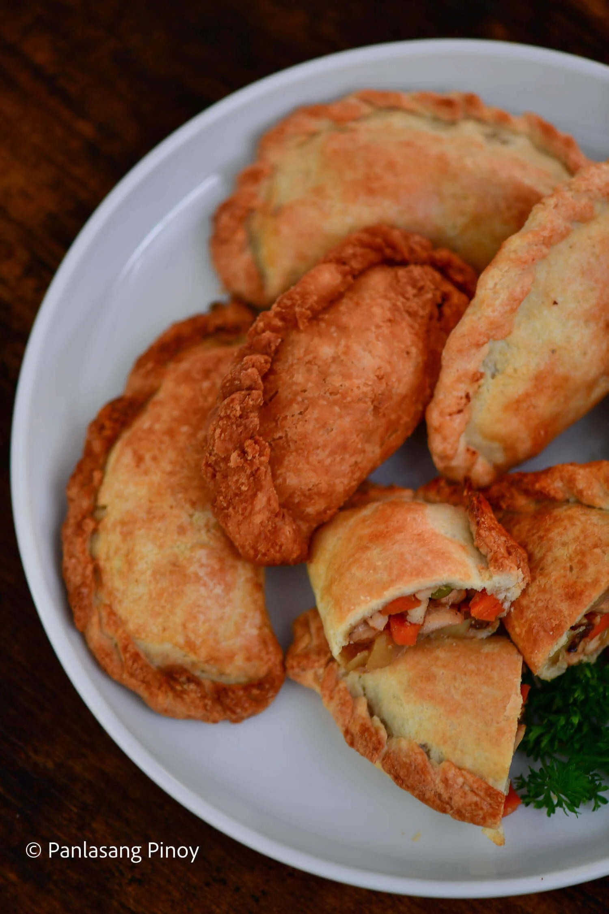

Back
Chicken Empanada

Description
Chicken Empanadas are a simple yet filling and delicious turnover pastry, and despite their compact half moon size are meals in themselves. No pretense necessary –– wonderful and juicy, empanadas are the no-frill snack everyone will love.
Ingredients
Filling Ingredients
- 1 1/2 lbs chicken breast cut into cubes
- 1 Knorr chicken cube
- 1 cup potato diced
- 1 cup carrot diced
- 1 cup green peas
- 1/4 cup raisins
- 1 onion minced
- 1 tablespoon garlic minced
- 2 tablespoons oyster sauce
- 2 tablespoons soy sauce
- 1 teaspoon sugar
- Salt and ground black pepper to taste
- 2 tablespoon cooking oil
Dough Ingredients
- 3 cups flour
- 4 tablespoons sugar
- 1 cup butter
- 1/2 teaspoon baking powder
- 6 tablespoon water cold
- 1 egg
Steps
- Start cooking the filing by heating the cooking oil in a pan.
- Once the oil is hot, saute the garlic and onion.
- Add the chicken breast then cook until color turns light brown (about 5 minutes)
- Add oyster sauce, soy sauce, and Knorr chicken cube. Stir and cover the pot. Cook for 5 minutes.
- Put-in carrots and potatoes. Cook for another 5 minutes
- Add the green peas, raisins, and sugar then simmer for 3 minutes
- Season with salt and ground black pepper. Turn off the heat, drain the excess liquid, and set aside.
- Make the dough by combining the dry ingredients in a mixing bowl starting with the all-purpose flour, sugar, baking powder, and salt. Mix well using a wire whisk.
- Cut the butter into small thin pieces place in the mixing bowl with the dry ingredients.(the butter should be cold and solid before doing this)
- Add water gradually and mix all the ingredients thoroughly until a dough is formed. You may use a pastry blender to ease the process.
- Divide the dough into individual pieces by grabbing a piece from the whole mixture and rolling it in your hand until a spherical shape is formed. Do this until all the dough is consumed. Set aside in a cool place for at least 20 minutes
- Flatten the spherical dough by pressing it with your palm against a flat surface. Use a rolling pin to flatten it fully while creating a round shape.
- Arrange about a quarter to half a cup of filling (the chicken that you cooked in the first few steps) at the middle of the flattened dough. Fold the dough so that opposite ends meet (you should have formed a half moon shaped dough)then press the edges and seal. (refer to the video for the technique)
- After all the fillings are consumed, crack the egg and separate the white from the yolk. Beat the egg white lightly and mix a little water.Glaze the crust by brushing the egg wash.
- Put a wax paper on top of a baking tray or grease the baking tray then arranged the sealed doughs.
- Pre-heat oven at 400 degrees Fahrenheit for 10 minutes. Bake the sealed doughs for 25 minutes at the same temperature.
- Remove from the oven.
- Serve hot. Share and Enjoy!
Recipe Source